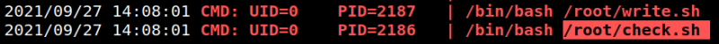
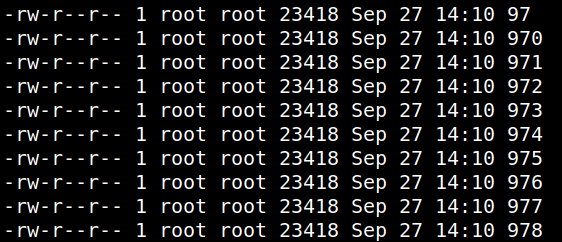

4.2 pspy2 – Unprivileged Linux Process Snooping
“pspy” is a command line tool designed to snoop on processes without need for root permissions. It allows you to see commands run by other users, cron jobs, etc. as they execute. Great for enumeration of Linux systems in CTFs. Also great to demonstrate your colleagues why passing secrets as arguments on the command line is a bad idea. More info here.
1. Download “pspy32” from .
2. Upload the file from the Kali Machine to “/tmp”.
$scp pspy32 angel@192.168.12.25:/tmp
3. Go to SSH connection shell.
4. Change “pspy32” privileges.
angel@grotesque:/$cd /tmp
angel@grotesque:/tmp$chmod +x pspy32
angel@grotesque:/tmp$chmod +x pspy32
5. Run the script.
./pspy32
Output:

It looks like there is a check.sh file inside /root that runs every 1-2 minutes, but I don't know what it does. If we check the files inside the “quiet” directory we see that those files are owned by root:

6. Go to the “quiet” directory and delete all the files.
angel@grotesque:~/quiet$rm -rf *